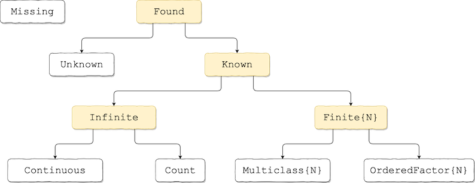

Adding New Models
This guide outlines in detail the specification of the MLJ model interface and provides guidelines for implementing the interface for models intended for general use. For sample implementations, see MLJModels/src.
The machine learning tools provided by MLJ can be applied to the models in any package that imports the package MLJBase and implements the API defined there, as outlined below. For a quick-and-dirty implementation of user-defined models see Simple User Defined Models. To make new models available to all MLJ users, see Where to place code implementing new models.
It is assumed the reader has read Getting Started. To implement the API described here, some familiarity with the following packages is also helpful:
Distributions.jl (for probabilistic predictions)
CategoricalArrays.jl (essential if you are implementing a model handling data of
MulticlassorOrderedFactorscitype)Tables.jl (if you're algorithm needs input data in a novel format).
In MLJ, the basic interface exposed to the user, built atop the model interface described here, is the machine interface. After a first reading of this document, the reader may wish to refer to MLJ Internals for context.
Overview
A model is an object storing hyperparameters associated with some machine learning algorithm. In MLJ, hyperparameters include configuration parameters, like the number of threads, and special instructions, such as "compute feature rankings", which may or may not affect the final learning outcome. However, the logging level (verbosity below) is excluded.
The name of the Julia type associated with a model indicates the associated algorithm (e.g., DecisionTreeClassifier). The outcome of training a learning algorithm is called a fitresult. For ordinary multilinear regression, for example, this would be the coefficients and intercept. For a general supervised model, it is the (generally minimal) information needed to make new predictions.
The ultimate supertype of all models is MLJBase.Model, which has two abstract subtypes:
abstract type Supervised <: Model end
abstract type Unsupervised <: Model endSupervised models are further divided according to whether they are able to furnish probabilistic predictions of the target (which they will then do so by default) or directly predict "point" estimates, for each new input pattern:
abstract type Probabilistic <: Supervised end
abstract type Deterministic <: Supervised endFurther division of model types is realized through Trait declarations.
Associated with every concrete subtype of Model there must be a fit method, which implements the associated algorithm to produce the fitresult. Additionally, every Supervised model has a predict method, while Unsupervised models must have a transform method. More generally, methods such as these, that are dispatched on a model instance and a fitresult (plus other data), are called operations. Probabilistic supervised models optionally implement a predict_mode operation (in the case of classifiers) or a predict_mean and/or predict_median operations (in the case of regressors) although MLJBase also provides fallbacks that will suffice in most cases. Unsupervised models may implement an inverse_transform operation.
New model type declarations and optional clean! method
Here is an example of a concrete supervised model type declaration:
import MLJ
mutable struct RidgeRegressor <: MLJBase.Deterministic
lambda::Float64
endModels (which are mutable) should not be given internal constructors. It is recommended that they be given an external lazy keyword constructor of the same name. This constructor defines default values for every field, and optionally corrects invalid field values by calling a clean! method (whose fallback returns an empty message string):
function MLJ.clean!(model::RidgeRegressor)
warning = ""
if model.lambda < 0
warning *= "Need lambda ≥ 0. Resetting lambda=0. "
model.lambda = 0
end
return warning
end
# keyword constructor
function RidgeRegressor(; lambda=0.0)
model = RidgeRegressor(lambda)
message = MLJBase.clean!(model)
isempty(message) || @warn message
return model
endSupervised models
The compulsory and optional methods to be implemented for each concrete type SomeSupervisedModel <: MLJBase.Supervised are summarized below. An = indicates the return value for a fallback version of the method.
Summary of methods
Compulsory:
MLJBase.fit(model::SomeSupervisedModel, verbosity::Integer, X, y) -> fitresult, cache, report
MLJBase.predict(model::SomeSupervisedModel, fitresult, Xnew) -> yhatFallback to be overridden if model input is univariate:
MLJBase.input_is_multivariate(::Type{<:SomeSupervisedModel}) = trueOptional, to check and correct invalid hyperparameter values:
MLJBase.clean!(model::SomeSupervisedModel) = "" Optional, to return user-friendly form of fitted parameters:
MLJBase.fitted_params(model::SomeSupervisedModel, fitresult) = fitresultOptional, to avoid redundant calculations when re-fitting machines:
MLJBase.update(model::SomeSupervisedModel, verbosity, old_fitresult, old_cache, X, y) =
MLJBase.fit(model, verbosity, X, y)Optional, if SomeSupervisedModel <: Probabilistic:
MLJBase.predict_mode(model::SomeSupervisedModel, fitresult, Xnew) =
mode.(predict(model, fitresult, Xnew))
MLJBase.predict_mean(model::SomeSupervisedModel, fitresult, Xnew) =
mean.(predict(model, fitresult, Xnew))
MLJBase.predict_median(model::SomeSupervisedModel, fitresult, Xnew) =
median.(predict(model, fitresult, Xnew))Required, if model is to be registered (findable by general users):
MLJBase.load_path(::Type{<:SomeSupervisedModel}) = ""
MLJBase.package_name(::Type{<:SomeSupervisedModel}) = "Unknown"
MLJBase.package_uuid(::Type{<:SomeSupervisedModel}) = "Unknown"Recommended, to constrain the form of input data passed to fit and predict:
MLJBase.input_scitype_union(::Type{<:SomeSupervisedModel}) = Union{Missing,Found}Recommended, to constrain the form of target data passed to fit (and compulsory if target is multivariate/sequential):
MLJBase.target_scitype_union(::Type{<:SomeSupervisedModel}) = Union{Found,NTuple{<:Found}}Optional but recommended:
MLJBase.package_url(::Type{<:SomeSupervisedModel}) = "Unknown"
MLJBase.is_pure_julia(::Type{<:SomeSupervisedModel}) = falseThe form of data for fitting and predicting
The inputs X and Xnew for fit and predict are always tables, unless one defines
MLJBase.input_is_multivariate(::Type{<:SomeSupervisedModel}) = falseThe target y is always an AbstractVector (see the discussion in Getting Started). For multivariate or sequence-valued targets, a target_scitype_union declaration is required. This is discussed under Trait declarations below, which also describes how to constrain the element types of data.
Additional type coercions
If the core algorithm being wrapped requires data in a different or more specific form, then fit will need to coerce the table into the form desired (and the same coercions applied to X will have to be repeated for Xnew in predict). To assist with common cases, MLJ provides the convenience method MLJBase.matrix. MLJBase.matrix(Xtable) has type Matrix{T} where T is the tightest common type of elements of Xtable, and Xtable is any table.
Other auxiliary methods provided by MLJBase for handling tabular data are: selectrows, selectcols, select and schema (for extracting the size, names and eltypes of a table). See Convenience methods below for details.
Important convention
It is to be understood that the columns of the table X correspond to features and the rows to patterns.
The fit method
A compulsory fit method returns three objects:
MLJBase.fit(model::SomeSupervisedModel, verbosity::Int, X, y) -> fitresult, cache, reportNote: The Int typing of verbosity cannot be omitted.
fitresult::Ris the fitresult in the sense above (which becomes an argument forpredictdiscussed below).reportis a (possibly empty)NamedTuple, for example,report=(deviance=..., dof_residual=..., stderror=..., vcov=...). Any training-related statistics, such as internal estimates of the generalization error, and feature rankings, should be returned in thereporttuple. How, or if, these are generated should be controlled by hyperparameters (the fields ofmodel). Fitted parameters, such as the coefficients of a linear model, do not go in the report as they will be extractable fromfitresult(and accessible to MLJ through thefitted_paramsmethod described below).
3. The value of cache can be nothing, unless one is also defining an update method (see below). The Julia type of cache is not presently restricted.
It is not necessary for fit to provide dimension checks or to call clean! on the model; MLJ will carry out such checks.
The method fit should never alter hyperparameter values. If the package is able to suggest better hyperparameters, as a byproduct of training, return these in the report field.
One should test that actual fitresults have the type declared in the model mutable struct declaration. To help with this, MLJBase.fitresult_type(m) returns the declared type, for any supervised model (or model type) m.
The verbosity level (0 for silent) is for passing to learning algorithm itself. A fit method wrapping such an algorithm should generally avoid doing any of its own logging.
The fitted_params method
A fitted_params method may be optionally overloaded. It's purpose is to provide MLJ access to a user-friendly representation of the learned parameters of the model (as opposed to the hyperparameters). They must be extractable from fitresult.
MLJBase.fitted_params(model::SomeSupervisedModel, fitresult) -> friendly_fitresult::NamedTupleFor a linear model, for example, one might declare something like friendly_fitresult=(coefs=[...], bias=...).
The fallback is to return (fitresult=fitresult,).
The predict method
A compulsory predict method has the form
MLJBase.predict(model::SomeSupervisedModel, fitresult, Xnew) -> yhatHere Xnew will be have the same form as the X passed to fit.
Prediction types for deterministic responses.
In the case of Deterministic models, yhat should be an AbstractVector (commonly a plain Vector) with the same element type as the target y passed to the fit method (see above). Any CategoricalValue or CategoricalString appearing in yhat must have the same levels in its the pool as was present in the elements of the target y presented in training, even if not all levels appear in the training data or prediction itself. For example, in the univariate target case, this means MLJ.classes(yhat[i]) = MLJ.classes(y[j]) for all admissible i and j. (The method classes is described under Convenience methods below).
Unfortunately, code not written with the preservation of categorical levels in mind poses special problems. To help with this, MLJBase provides three utility methods: int (for converting a CategoricalValue or CategoricalString into an integer, the ordering of these integers being consistent with that of the pool), decoder (for constructing a callable object that decodes the integers back into CategoricalValue/CategoricalString objects), and classes, for extracting the complete pool from a single value. Refer to Convenience methods below for important details.
Note that a decoder created during fit may need to be bundled with fitresult to make it available to predict during re-encoding. So, for example, if the core algorithm being wrapped by fit expects a nominal target yint of type Vector{<:Integer} then a fit method may look something like this:
function MLJBase.fit(model::SomeSupervisedModel, verbosity, X, y)
yint = MLJBase.int(y)
a_target_element = y[1] # a CategoricalValue/String
decode = MLJBase.decoder(a_target_element) # can be called on integers
core_fitresult = SomePackage.fit(X, yint, verbosity=verbosity)
fitresult = (decode, core_fitresult)
cache = nothing
report = nothing
return fitresult, cache, report
endwhile a corresponding deterministic predict operation might look like this:
function MLJBase.predict(model::SomeSupervisedModel, fitresult, Xnew)
decode, core_fitresult = fitresult
yhat = SomePackage.predict(core_fitresult, Xnew)
return decode.(yhat) # or decode(yhat) also works
endFor a concrete example, refer to the code for SVMClassifier.
Of course, if you are coding a learning algorithm from scratch, rather than wrapping an existing one, these extra measures may be unnecessary.
Prediction types for probabilistic responses
In the case of Probabilistic models with univariate targets, yhat must be a Vector whose elements are distributions (one distribution per row of Xnew).
Presently, a distribution is any object d for which MLJBase.isdistribution(::d) = true, which includes all objects of type Distributions.Distribution from the package Distributions.jl. The declaration MLJBase.isdistribution(::d) = true implies that at least Base.rand(d) is implemented, but the rest of this API is still a work-in-progress.
Use the distribution MLJBase.UnivariateFinite for Probabilistic models predicting a target with Finite scitype (classifiers). In this case each element of the training target y is a CategoricalValue or CategoricalString, as in this contrived example:
using CategoricalArrays
y = identity.(categorical([:yes, :no, :no, :maybe, :maybe]))Note that, as in this case, we cannot assume y is a CategoricalVector, and we rely on elements for pool information (if we need it); this is accessible using the convenience method MLJ.classes:
julia> yes = y[1]
julia> levels = MLJBase.classes(yes)
3-element Array{CategoricalValue{Symbol,UInt32},1}:
:maybe
:no
:yesNow supposing that, for some new input pattern, the elements yes = y[1] and no = y[2] are to be assigned respective probabilities of 0.2 and 0.8. Then the corresponding distribution d is constructed as follows:
julia> d = MLJBase.UnivariateFinite([yes, no], [0.2, 0.8])
UnivariateFinite{CategoricalValue{Symbol,UInt32},Float64}(Dict(:yes=>0.2,:maybe=>0.0,:no=>0.8))
julia> pdf(d, yes)
0.2
julia> maybe = y[4]; pdf(d, maybe)
0.0Alternatively, a dictionary can be passed to the constructor.
MLJBase.UnivariateFinite — Type.UnivariateFinite(levels, p)A discrete univariate distribution whose finite support is the elements of the vector levels, and whose corresponding probabilities are elements of the vector p, which must sum to one.
In the special case that levels has type AbstractVector{L} where L <: CategoricalValue or L <: CategoricalString (for example levels is a CategoricalVector) the constructor adds the unobserved classes (from the common pool) with probability zero.
UnivariateFinite(prob_given_level)A discrete univariate distribution whose finite support is the set of keys of the provided dictionary, prob_given_level. The dictionary values specify the corresponding probabilities, which must be nonnegative and sum to one.
In the special case that keys(prob_given_level) has type AbstractVector{L} where L <: CategoricalValue or L <: CategoricalString (for example it is a CategoricalVector) the constructor adds the unobserved classes from the common pool with probability zero.
levels(d::UnivariateFinite)Return the levels of d.
d = UnivariateFinite(["yes", "no", "maybe"], [0.1, 0.2, 0.7])
pdf(d, "no") # 0.2
mode(d) # "maybe"
rand(d, 5) # ["maybe", "no", "maybe", "maybe", "no"]
d = fit(UnivariateFinite, ["maybe", "no", "maybe", "yes"])
pdf(d, "maybe") ≈ 0.5 # true
levels(d) # ["yes", "no", "maybe"]If the element type of v is a CategoricalValue or CategoricalString, then fit(UnivariateFinite, v) assigns a probability of zero to unobserved classes from the common pool.
See also classes
Trait declarations
Two trait functions allow the implementer to restrict the types of elements appearing in the inputs X, and Xnew passed to fit and predict, and the elements appearing in the training target y. The MLJ task interface also uses these traits to match models to tasks. So if they are omitted (and your model is registered) then a general user may attempt to use your model with inappropriately typed data.
The trait functions input_scitype_union and target_scitype_union take scientific data types as values (see Getting Started for scitype basics). These types are organized in the following hierarchy:

For example, to ensure that elements of X presented to the DecisionTreeClassifier fit method all have Continuous scitype (and hence AbstractFloat machine type), one declares
MLJBase.input_scitype_union(::Type{<:DecisionTreeClassifier}) = MLJBase.ContinuousFor, in general, MLJ will never call fit(model::SomeSuperivsedModel, verbosity, X, y) unless Union{scitypes(X)...} <: inputs_scitype_union(SomeSupervisedModel) holds. (See Convenience methods below for more on the scitypes and related scitype_union methods.)
Similarly, one declares
MLJBase.target_scitype_union(::Type{<:DecisionTreeClassifier}) = MLJBase.Finiteto ensure that all elements of the target y (which is always an AbstractVector) have Finite scitype (and hence CategoricalValue or CategoricalString machine type). This is because, in the general case, MLJ guarantees that scitype_union(y) <: target_scitype_union(SomeSupervisedModel).
Multivariate targets
The above remarks continue to hold unchanged for the case multivariate targets. In this case the elements of the AbstractVector y are now tuples. If, for example, you declare
target_scitype_union(SomeSupervisedModel) = Tuple{Continuous,Count}then each element of y will be a tuple of type Tuple{AbstractFloat,Integer}. For predicting variable length sequences of, say, binary values, use
target_scitype_union(SomeSupervisedModel) = NTuple{<:Multiclass{2}}The trait functions controlling the form of data are summarized as follows:
| method | return type | declarable return values | default value |
|---|---|---|---|
input_is_multivariate | Bool | true or false | true |
input_scitype_union | DataType | subtype of Union{Missing,Found} | Union{Missing,Found} |
target_scitype_union | DataType | subtype of Found or tuple of such types | Union{Found,NTuple{<:Found}} |
Additional trait functions tell MLJ's @load macro how to find your model if it is registered, and provide other self-explanatory metadata about the model:
| method | return type | declarable return values | default value |
|---|---|---|---|
load_path | String | unrestricted | "unknown" |
package_name | String | unrestricted | "unknown" |
package_uuid | String | unrestricted | "unknown" |
package_url | String | unrestricted | "unknown" |
is_pure_julia | Bool | true or false | false |
Here is the complete list of trait function declarations for DecistionTreeClassifier (source):
MLJBase.input_is_multivariate(::Type{<:DecisionTreeClassifier}) = true
MLJBase.input_scitype_union(::Type{<:DecisionTreeClassifier}) = MLJBase.Continuous
MLJBase.target_scitype_union(::Type{<:DecisionTreeClassifier}) = MLJBase.Finite
MLJBase.load_path(::Type{<:DecisionTreeClassifier}) = "MLJModels.DecisionTree_.DecisionTreeClassifier"
MLJBase.package_name(::Type{<:DecisionTreeClassifier}) = "DecisionTree"
MLJBase.package_uuid(::Type{<:DecisionTreeClassifier}) = "7806a523-6efd-50cb-b5f6-3fa6f1930dbb"
MLJBase.package_url(::Type{<:DecisionTreeClassifier}) = "https://github.com/bensadeghi/DecisionTree.jl"
MLJBase.is_pure_julia(::Type{<:DecisionTreeClassifier}) = trueYou can test all your declarations of traits by calling info(SomeModel).
Iterative models and the update! method
An update method may be optionally overloaded to enable a call by MLJ to retrain a model (on the same training data) to avoid repeating computations unnecessarily.
MLJBase.update(model::SomeSupervisedModel, verbosity, old_fitresult, old_cache, X, y) -> fitresult, cache, reportIf an MLJ Machine is being fit! and it is not the first time, then update is called instead of fit, unless the machine fit! has been called with a new rows keyword argument. However, MLJBase defines a fallback for update which just calls fit. For context, see MLJ Internals.
Learning networks wrapped as models constitute one use-case (see Learning Networks): One would like each component model to be retrained only when hyperparameter changes "upstream" make this necessary. In this case MLJ provides a fallback (specifically, the fallback is for any subtype of SupervisedNetwork = Union{DeterministicNetwork,ProbabilisticNetwork}). A second more generally relevant use-case is iterative models, where calls to increase the number of iterations only restarts the iterative procedure if other hyperparameters have also changed. For an example, see the MLJ ensemble code.
In the event that the argument fitresult (returned by a preceding call to fit) is not sufficient for performing an update, the author can arrange for fit to output in its cache return value any additional information required, as this is also passed as an argument to the update method.
Unsupervised models
TODO
transformshould return a table unlessoutput_is_multivariateis
set false. Convenience method: table (for materializing an AbstractMatrix, or named tuple of vectors, as a table matching a given prototype)
instead of
target_scitype_unionhaveoutput_scitype_unioninput_is_multivariateandinput_scitype_unionare the same
Convenience methods
MLJBase.int — Function.int(x)
The positional integer of the CategoricalString or CategoricalValue x, in the ordering defined by the pool of x. The type of int(x) is the refrence type of x.
Not to be confused with x.ref, which is unchanged by reordering of the pool of x, but has the same type.
int(X::CategoricalArray)
int(W::Array{<:CategoricalString})
int(W::Array{<:CategoricalValue})Broadcasted versions of int.
julia> v = categorical([:c, :b, :c, :a])
julia> levels(v)
3-element Array{Symbol,1}:
:a
:b
:c
julia> int(v)
4-element Array{UInt32,1}:
0x00000003
0x00000002
0x00000003
0x00000001See also: decoder
MLJBase.classes — Function.classes(x)All the categorical values in the same pool as x (including x), returned as a list, with an ordering consistent with the pool. Here x has CategoricalValue or CategoricalString type, and classes(x) is a vector of the same eltype.
Not to be confused with the levels of x.pool which have a different type. In particular, while x in classes(x) is always true, x in x.pool.levels is not true.
julia> v = categorical([:c, :b, :c, :a])
julia> levels(v)
3-element Array{Symbol,1}:
:a
:b
:c
julia> classes(v[4])
3-element Array{CategoricalValue{Symbol,UInt32},1}:
:a
:b
:cMLJBase.decoder — Function.d = decoder(x)A callable object for decoding the integer representation of a CategoricalString or CategoricalValue sharing the same pool as x. (Here x is of one of these two types.) Specifically, one has d(int(y)) == y for all y in classes(x). One can also call d on integer arrays, in which case d is broadcast over all elements.
julia> v = categorical([:c, :b, :c, :a])
julia> int(v)
4-element Array{UInt32,1}:
0x00000003
0x00000002
0x00000003
0x00000001
julia> d = decoder(v[3])
julia> d(int(v)) == v
trueSee also: int, classes
MLJBase.matrix — Function.MLJBase.matrix(X)Convert a table source X into an Matrix; or, if X is a AbstractMatrix, return X. Optimized for column-based sources.
If instead X is a sparse table, then a SparseMatrixCSC object is returned. The integer relabelling of column names follows the lexicographic ordering (as indicated by schema(X).names).
MLJBase.table — Function.MLJBase.table(cols; prototype=cols)Convert a named tuple of vectors cols, into a table. The table type returned is the "preferred sink type" for prototype (see the Tables.jl documentation).
MLJBase.table(X::AbstractMatrix; names=nothing, prototype=nothing)Convert an abstract matrix X into a table with names (a tuple of symbols) as column names, or with labels (:x1, :x2, ..., :xn) where n=size(X, 2), if names is not specified. If prototype=nothing, then a named tuple of vectors is returned.
Equivalent to table(cols, prototype=prototype) where cols is the named tuple of columns of X, with keys(cols) = names.
MLJBase.select — Function.select(X, r, c)Select element of a table or sparse table at row r and column c. In the case of sparse data where the key (r, c), zero or missing is returned, depending on the value type.
See also: selectrows, selectcols
MLJBase.selectrows — Function.selectrows(X, r)Select single or multiple rows from any table, sparse table, or abstract vector X. If X is tabular, the object returned is a table of the preferred sink type of typeof(X), even a single row is selected.
MLJBase.selectcols — Function.selectcols(X, c)Select single or multiple columns from any table or sparse table X. If c is an abstract vector of integers or symbols, then the object returned is a table of the preferred sink type of typeof(X). If c is a single integer or column, then a Vector or CategoricalVector is returned.
MLJBase.schema — Function.schema(X)Returns a struct with properties names, types with the obvious meanings. Here X is any table or sparse table.
MLJBase.nrows — Function.nrows(X)Return the number of rows in a table, sparse table, or abstract vector.
MLJBase.scitype — Function.scitype(x)Return the scientific type for scalar values that object x can represent. If x is a tuple, then Tuple{scitype.(x)...} is returned.
julia> scitype(4.5)
Continous
julia> scitype("book")
Unknown
julia> scitype((1, 4.5))
Tuple{Count,Continuous}
julia> using CategoricalArrays
julia> v = categorical([:m, :f, :f])
julia> scitype(v[1])
Multiclass{2}MLJBase.scitype_union — Function.scitype_union(A)Return the type union, over all elements x generated by the iterable A, of scitype(x).
MLJBase.scitypes — Function.scitypes(X)Returns a named tuple keyed on the column names of the table X with values the corresponding scitype unions over a column's entries.
Where to place code implementing new models
Note that different packages can implement models having the same name without causing conflicts, although an MLJ user cannot simultaneously load two such models.
There are two options for making a new model implementation available to all MLJ users:
Native implementations (preferred option). The implementation code lives in the same package that contains the learning algorithms implementing the interface. In this case, it is sufficient to open an issue at MLJRegistry requesting the package to be registered with MLJ. Registering a package allows the MLJ user to access its models' metadata and to selectively load them.
External implementations (short-term alternative). The model implementation code is necessarily separate from the package
SomePkgdefining the learning algorithm being wrapped. In this case, the recommended procedure is to include the implementation code at MLJModels/src via a pull-request, and test code at MLJModels/test. AssumingSomePkgis the only package imported by the implementation code, one needs to: (i) registerSomePkgat MLJRegistry as explained above; and (ii) add a corresponding@requireline in the PR to MLJModels/src/MLJModels.jl to enable lazy-loading of that package by MLJ (following the pattern of existing additions). If other packages must be imported, add them to the MLJModels project file after checking they are not already there. If it is really necessary, packages can be also added to Project.toml for testing purposes.
Additionally, one needs to ensure that the implementation code defines the package_name and load_path model traits appropriately, so that MLJ's @load macro can find the necessary code (see MLJModels/src for examples). The @load command can only be tested after registration. If changes are made, lodge an issue at MLJRegistry to make the changes available to MLJ.